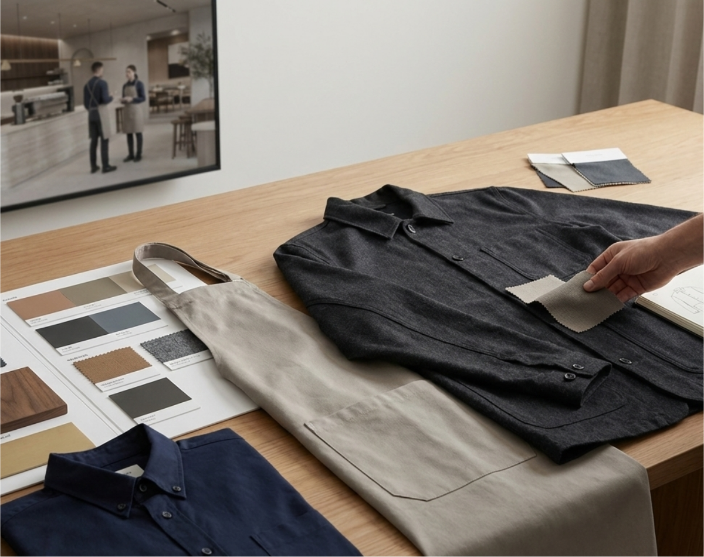

Espace
L’architecture, les matières et l’atmosphère définissent la direction visuelle.
STUDIO DE CONCEPTION ET DE PRODUCTION D’UNIFORMES SUR MESURE
Nous concevons et produisons des uniformes sur mesure pour les équipes de l’hôtellerie, du médical et des services. Chaque projet est développé à partir du fonctionnement réel de l’équipe, de l’atmosphère du lieu et de la manière dont le vêtement doit tenir dans le temps.

SERVICES
Notre service principal est la conception et la production d’uniformes sur mesure. Nous développons aussi du merchandising premium pour des plus petites séries, des ouvertures, des événements et des besoins plus informels.
Développés depuis zéro autour des rôles, du mouvement, de la durabilité et de la cohérence de marque.
Pièces de marque pour des ouvertures, des événements, des cadeaux et certains usages d’équipe.
Pensé pour les équipes où le vêtement fait partie de l’expérience
POUR QUI
Choisissez un secteur pour voir les vêtements types, les usages fréquents et la place réelle du vêtement dans l’expérience quotidienne.
NOTRE MÉTHODE DE CONCEPTION
Nous partons du lieu, puis nous construisons le vêtement autour des personnes qui le portent.
L’architecture, les matières et l’atmosphère définissent la direction visuelle.
Chaque fonction est analysée selon le mouvement, le rythme de service et les tâches quotidiennes.
Les fits, les silhouettes et les catégories de produits sont alignés sur l’ensemble de l’équipe.
La durabilité, l’entretien et la logique de réassort sont intégrés dès le départ.
CE QUI PEUT ÊTRE DÉVELOPPÉ
Assez large pour des équipes à plusieurs rôles. Assez précise pour rester cohérente, pratique et prête pour la production.
CATÉGORIES DE VÊTEMENTS
BRANDING & IDENTITÉ
CONSTRUCTION TECHNIQUE

PROCESSUS
Ouvrez chaque phase pour voir l’objectif, les actions clés, les livrables et leur utilité dans le projet.
PHASE 01
Nous définissons clairement le brief avant de commencer le développement.
PHASE 02
Nous testons le produit, affinons les détails et le préparons pour la production.
PHASE 03
Une fois l’ensemble validé, le projet passe en fabrication et en livraison.
TOUT EST PERSONNALISABLE
Les sections ci dessous expliquent comment la personnalisation est traitée dans un projet réel, du choix des tissus aux détails de branding.
Le choix du tissu dépend de la durée des shifts, du climat, du niveau de mouvement et des besoins d’entretien.
La direction couleur part du lieu et de la marque, puis se confronte à l’usage opérationnel.
Les finitions ajoutent de l’identité et de la précision sans réduire la performance quotidienne.
Le branding est défini selon le type de vêtement, la fréquence d’usage et le niveau de visibilité recherché.

Les prototypes et essayages locaux permettent d’avancer plus vite et plus clairement sur les décisions techniques.

Les vêtements sont développés autour du mouvement, des longues journées et du rythme quotidien du service.

Patrons, finitions et références sont archivés pour garder des réassorts cohérents à mesure que les équipes évoluent.
PARAMÈTRES DE PRODUCTION
Ouvrez chaque section pour voir plus de détails sur les quantités, la logique de prix et les variables de délai.
Des quantités plus basses sont possibles, mais le prix unitaire peut augmenter.
Fourchette indicative par pièce, hors TVA.
Les principaux éléments qui peuvent faire monter le coût unitaire.
Les principaux éléments qui peuvent allonger le planning.
MODÈLE DE CONTINUITÉ
La première exécution définit le vestiaire. Une fois validé, le même travail peut être réutilisé pour des commandes futures plus rapides et plus cohérentes.
PROJETS SÉLECTIONNÉS
Exemples de la manière dont les choix de conception se traduisent dans l’usage quotidien, le confort de l’équipe et la continuité dans le temps.

Vêtements d’accueil développés autour de l’architecture, de la présentation et des longues journées.

Silhouettes validées, archivées une fois puis réactivées à mesure que l’équipe se développe.

Silhouettes nettes et construction pensée pour le confort, la clarté et le port quotidien.
ÉQUIPE
Les projets restent proches des personnes qui prennent les décisions de design, de produit et de coordination.

Fondateur et Responsable Produit
Profil issu du design et du développement produit. Il pilote les silhouettes, la logique de fitting et les décisions produit prêtes pour la production.

Cofondatrice et Cheffe de projet
Elle pilote la coordination du projet, les délais, l’alignement des parties prenantes et la structure de livraison du premier appel jusqu’au handoff.

Cofondateur et Responsable Opérations
Il apporte un regard issu des opérations hospitality afin que les décisions sur les uniformes restent pratiques pour le mouvement, le rythme du service et l’usage quotidien.
FAQ
Réponses détaillées aux questions fréquentes des équipes hospitality, médicales et de service.
Non. Nous développons chaque projet à partir de votre contexte opérationnel, de votre direction de marque et de la structure de votre équipe. Des bases existantes peuvent être utilisées lorsqu’elles améliorent réellement le délai et le coût, mais le résultat final reste spécifique à votre projet.
Oui. Les patrons, tissus, finitions et méthodes de branding validés sont archivés pour assurer la continuité. Cela réduit le travail de redéveloppement, améliore la cohérence pour les nouveaux arrivants et facilite les futures commandes.
Non. Certains clients commencent par une seule catégorie de vêtement ou par un seul rôle, puis élargissent ensuite le programme. Nous définissons le bon point d’entrée selon l’urgence, le budget et l’impact opérationnel.
Oui. Nous pouvons travailler à partir de gammes couleurs de fournisseur pour aller plus vite ou développer des couleurs et finitions sur mesure lorsque les quantités le permettent. Les méthodes de branding sont choisies selon la durabilité, la lisibilité et le type de vêtement.
COMMENCER LA CONVERSATION
Nous vérifions la faisabilité, clarifions le meilleur point de départ et vous orientons vers la bonne voie, qu’il s’agisse d’un projet uniforme complet ou d’un besoin plus ciblé en merchandising.
Des vestiaires professionnels conçus autour de votre espace, de votre équipe
et de votre fonctionnement.
Les projets entièrement sur mesure commencent à partir d’une page blanche.
Au lieu d’adapter un produit catalogue, nous développons des vêtements
spécifiquement pour votre environnement, la structure de votre équipe et la
réalité quotidienne du service.
Les uniformes sont pensés comme un vestiaire cohérent, et non comme des
pièces isolées. Chaque vêtement fonctionne visuellement et fonctionnellement
avec l’ensemble de l’équipe.
Ce qui définit un projet sur mesure
Conçu à partir de l’espace
L’architecture, les matériaux, la lumière et l’atmosphère de la marque
définissent la direction visuelle du vestiaire.
Développement des vêtements par fonction
Chaque rôle est étudié individuellement : réception, service, management,
opérations. Les vêtements s’adaptent au mouvement et au rythme de chaque
fonction.
Silhouettes sur mesure
Les coupes, longueurs et proportions sont ajustées afin que les vêtements
s’intègrent naturellement dans l’environnement tout en restant confortables
pendant de longues journées de travail.
Ce qui est développé
Chaque projet définit son propre périmètre. Certains clients développent un
seul vêtement clé, d’autres construisent un vestiaire complet pour toute
l’équipe.
Une fois validés, les patrons et les finitions sont archivés afin de permettre des
réassorts rapides et cohérents.
Des vêtements de marque qui prolongent votre identité au-delà de l’uniforme.
Les pièces de merchandising renforcent la visibilité de la marque lors
d’événements, d’ouvertures, d’initiatives d’équipe ou d’expériences clients.
Elles sont conçues pour compléter le système d’uniformes tout en permettant
davantage de flexibilité dans les matériaux, les couleurs et les techniques de
marquage.
Articles de merchandising typiques
Possibilités de marquage
Usages typiques
Le merchandising peut être développé indépendamment ou en complément
d’un projet d’uniformes.
Systèmes d’uniformes conçus pour les équipes d’hôtellerie.
Les hôtels regroupent souvent plusieurs départements qui interagissent avec
les clients dans différents environnements. Les uniformes doivent refléter
l’identité de l’établissement tout en restant pratiques pour les opérations
quotidiennes.
Rôles typiques
Exemples de vêtements
Priorités de conception
Uniformes conçus pour des environnements de service dynamiques.
Les équipes de restaurant ont besoin de vêtements qui équilibrent durabilité,
confort et identité visuelle.
Les uniformes doivent permettre un service fluide tout en renforçant
l’atmosphère du restaurant.
Vêtements typiques
Points clés de conception
Des vêtements conçus pour des environnements calmes et confortables.
Les équipes de spa et de bien-être ont besoin d’uniformes qui transmettent
sérénité et confiance.
La conception privilégie des matières douces, des silhouettes épurées et des
tissus respirants tout en respectant l’identité de la marque.
Vêtements typiques
Priorités textiles
Uniformes professionnels pour les environnements de santé.
Les professionnels de santé ont besoin de vêtements capables d’accompagner
de longues heures de mouvement tout en conservant une apparence propre et
rassurante.
Notre approche privilégie la fonctionnalité tout en maintenant une esthétique
soignée.
Vêtements typiques
Priorités de conception
Des vêtements durables pour les rôles opérationnels.
Les équipes de service interviennent dans la maintenance, la logistique et le
support opérationnel. Les uniformes doivent résister à un mouvement constant
tout en conservant une identité visuelle cohérente avec la marque.
Vêtements typiques
Priorités techniques
Des vêtements pour les équipes en contact direct avec les clients.
Les équipes en contact avec les clients représentent visuellement la marque.
Les uniformes doivent transmettre professionnalisme et élégance tout en
restant confortables pour les interactions quotidiennes.
Vêtements typiques
Priorités de conception
Comprendre l’environnement et les besoins opérationnels.
Chaque projet commence par une phase de découverte durant laquelle nous
analysons le contexte dans lequel les vêtements seront utilisés.
L’architecture, le flux de service, les rôles de l’équipe et l’identité de la marque
définissent la direction du vestiaire.
Activités
L’objectif est d’établir une base claire avant le début du développement.
Transformer la direction créative en vêtements réels.
Pendant la phase de développement, nous affinons les tissus, les patrons et la
construction des vêtements.
Des prototypes sont réalisés et testés lors d’essayages afin de garantir confort,
fonctionnalité et cohérence visuelle.
Activités
Cette phase garantit que les vêtements fonctionnent correctement dans des
conditions réelles de travail.
Fabrication des modèles approuvés.
Une fois les vêtements validés, la production commence avec des patrons,
tissus et finitions finalisés.
La fabrication locale permet un contrôle qualité précis et des délais fiables.
Activités
Les quantités minimales dépendent de la construction des vêtements et des
matériaux utilisés.
Minimums typiques
Vêtements tissés
50 pièces par modèle
Réparties entre les tailles et les couleurs.
Maille
100 à 150 pièces par modèle.
Des séries plus petites peuvent être possibles mais peuvent influencer le prix
en raison de l’efficacité de production.
Les prix varient selon l’ampleur technique et créative du projet.
Chaque projet est évalué individuellement en fonction des vêtements développés et des paramètres de production.
Les prix dépendent notamment de
Les fourchettes de prix peuvent varier fortement selon ces variables.
Tous les prix sont des fourchettes indicatives par pièce (hors TVA).
| Type de produit | Fourchette de prix (€/unité) | Notes |
|---|---|---|
| T-shirts | 25€ – 40€ | Coton ou mélanges coton, marquage simple |
| Polos | 30€ – 50€ | Broderie ou étiquette tissée |
| Chemises (hôtellerie) | 45€ – 75€ | Pièce centrale du vestiaire uniforme |
| Surchemises | 60€ – 95€ | Souvent utilisées pour les équipes de service |
| Pantalons | 65€ – 95€ | Coutures renforcées et tissus durables |
| Jupes | 55€ – 85€ | Silhouettes adaptées à l’hospitalité |
| Robes | 75€ – 120€ | Construction plus complexe |
| Tabliers | 30€ – 60€ | Selon tissu et fonctionnalités |
| Maille (pulls / cardigans) | 70€ – 110€ | Quantités minimales plus élevées |
| Blazers / vestes tailleur | 95€ – 150€+ | Construction structurée |
| Vestes légères / couches extérieures | 80€ – 140€ | Selon tissu et finitions |
| Casquettes | 15€ – 30€ | Broderie ou étiquette |
| Tote bags | 12€ – 25€ | Coton ou toile |
| Sweatshirts / hoodies | 45€ – 80€ | Impression ou broderie |
La plupart des projets combinent plusieurs vêtements afin de créer un vestiaire cohérent.
Le prix final dépend de la sélection des tissus, de la complexité de construction, des techniques de marquage et des quantités produites.
Plusieurs éléments influencent le coût final d’un projet d’uniformes.
Principaux facteurs
Qualité des tissus
Les tissus techniques ou fibres naturelles augmentent souvent le coût.
Complexité de construction
Les vêtements tailleur ou les patrons complexes nécessitent davantage de
développement.
Techniques de marquage
La broderie, les finitions personnalisées ou certaines impressions ajoutent des
étapes de production.
Quantités commandées
Des volumes plus élevés permettent de réduire le coût unitaire.
Les délais dépendent de la complexité du développement et de la planification
de la production.
Calendrier typique
Développement : 4 à 6 semaines
Production : 3 à 5 semaines
Les projets entièrement sur mesure nécessitent généralement environ 8
semaines entre l’idée initiale et la livraison.
Facteurs pouvant influencer les délais
Anticiper les projets permet d’assurer un développement fluide et des délais de
livraison fiables.